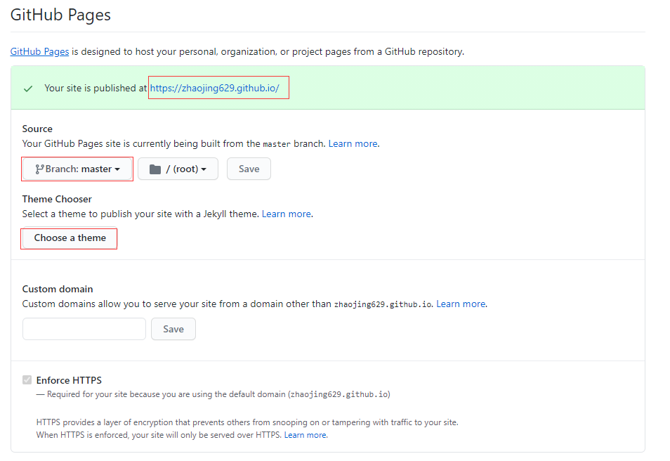

搭建
下载Git和Node.js
Git：安装完成后在Windows PowerShell中输入
git --version验证是否安装成功。Node.js：安装好后在Windows PowerShell输入
node -v和npm -v验证是否安装成功。配置Git
在windows菜单中，打开
Git Bash输入用户名和邮箱
1
2git config --global user.name "username"
git config --global user.email "邮件地址@youremail.com"生成新的SSH Key
1
ssh-keygen -t rsa -C "邮件地址@youremail.com"
一直回车直到出现
1
2
3
4
5
6
7
8
9
10
11
12The key's randomart image is:
+---[RSA 3072]----+
| oo |
| . .E |
| + o |
| * + + |
| S B + o |
| = + o.O.|
| + = . OoX|
| . . +.BoO=|
| ....+=*=*|
+----[SHA256]-----+打开github，点击头像→
setting→SSH and GPG keys→New SSH key- 输入
Title - 在Git Bash中输入
cat ~/.ssh/id_rsa.pub后，复制出现的内容到Key里 - 点击
Add SSH key
- 输入
在Git Bash中输入
ssh -T git@github.com,再输入yes，出现自己的用户名，表示配置成功
安装Hexo
在命令行里利用npm命令安装hexo，最后通过
hexo -v验证是否安装成功。1
npm install -g hexo
在Github上创建Repository，Repository name 中填入
username.github.io，点击Create repository有很多教程中，在此处可以接着：
在Repository的
Setting中的GitHub Pages部分，Choose a theme先选择一个主题，直接可以生成Github主题的网站，再进行后续操作。但在2020-10-01后，github新建的默认的库位main而不是master，会导致在
hexo g -d后，网页一直不更新，此时就需要在GitHub Pages部分的Source中把分支切换为master。为了避免这个问题，可以跳过这一步；也可以在
deploy:中把branch: master改成branch: main。在本地创建一个与 Repository 中博客项目同名的文件夹
username.github.io后，进入文件夹，右键Git bash here，输入hexo init初始化文件夹，接着输入npm install安装必备的组件确保git部署：
1
npm install hexo-deployer-git --save
输入
hexo g生成静态网页，再输入hexo s打开本地服务器，然后打开浏览器预览：http://localhost:4000，按`ctrl+c`关闭本地服务器。
将博客部署到username.github.io
进入 Github 的网站 Repository，点击
code→SSH，复制打开网站文件夹根目录中的~/_config.yml
站点配置文件，将deploy部分修改为：1
2
3
4deploy:
type: git
repository: git@github.com:username/username.github.io.git
branch: master同时可以顺便修改
site部分:title博客名subtitle副标题description对网站的描述，可以自定义，给搜索引擎看author作者，在博客底部可以看到email联系邮箱language默认英文，中文为zh-CN
1
2
3
4
5
6
7
8title: Hexo
subtitle: ''
description: ''
keywords:
author: John Doe
email:
language: en
timezone: ''以后每次修改本地文件后，都需要输入：
1
2
3hexo g
hexo s #预览
hexo d也可以不预览，直接
hexo g -d来更新网站。再打开网站就可以了。如果修改了内容，hexo g -d后原网页没有反应，可以用ctrl+F5强制刷新
在多台电脑上操作
原理：
hexo g -d完成的是将在/public文件夹下生成静态的网页文件，然后将其复制到/.deploy_git文件夹里，再通过Github push到创建的网页分支master上。
其他文件夹hexo的模块node_modules，文章文件source，主题文件themes等等都没有上传到master上，因此可以通过再创建一个分支来进行同步。
首先在Github的
username.github.ioRepository中点击master按钮，输入source并回车，新建一个同步所有文件的分支source再通过
branches→All branches→change default branch，切换为source后updata，回到username.github.ioRepository中，在code中复制SSH新建一个空文件夹XXXX，在此文件夹下右键
Git bash here，输入：1
$ git clone 复制的ssh
进入XXXX/username.github.io文件夹，将该文件夹下除了.git（默认是隐藏文件）的文件夹全部删除
将本来网站的目录下username.github.io除了.deploy_git的文件全部复制到XXXX/username.github.io文件夹，其中有一个
.gitignore文件，表示其中的文件不需要上传。另外，因为一个git仓库中不能包含另一个git仓库，如果在theme下git clone了主题文件，需要把相应目录下的.git文件夹删除。在命令行下，
cd username.github.io进入该文件夹下，可以看到最后有个(source)表明当前在source分支下：git add .告诉Git，把文件添加到仓库git commit告诉Git，把文件提交到仓库，-m后面是修改的说明git push将本地分支的更新，推送到远程
1
2
3git add .
git commit –m "add branch"
git push在其他电脑上的操作如下：
准备工作：在该电脑上需要准备好Git和Node等，配置好
SSH key，安装hexo等等新建文件夹YYYYYYY，然后再该文件夹下
git clone 复制的ssh，cd 进入username.github.io文件夹下，执行npm install下载必要的组件，也会有一个.gitignore文件在该文件夹下修改后，
hexo g -d更新网站。然后将更新推送到
source分支1
2
3git add .
git commit –m "add branch"
git push以后不管在原本电脑还是其他电脑上，首先
git pull获取更新，然后再进行修改，再推送到source分支。
文章相关
新建文章
在根目录下右键并GIt Bash here，然后输入
hexo new post "article title"，新建一篇文章，此时在~/source_posts下就出现了article title.md文件，进行编辑即可。为了新建文章方便，可以将~/scaffolds/post.md的Front-matter部分修改为自己默认需要的：
1
2
3
4
5
6
7
8---
title: {{ title }}
date: {{ date }}
updated:
tags:
categories:
typora-root-url: {{ title }}
---
在文章中插入图片
- 如果只有少量图片，可以在~/source目录下新建images文件夹，通过
来引用。 - 如果图片比较多，可以建立文章自己的目录，在
站点配置文件中，将post_asset_folder关键词改成true。之后通过hexo new post "article title"在新建文章时，就会出现与文章名相同的文件夹article title，将图片放入其中后，通过直接引用。 - 基于md编辑器Typora编辑：
- 以上在Typora中无法显示图片，可以在md文件的Front-matter部分，根据文章所有图片存在的位置，添加
typora-root-url: ..或者typora-root-url: article title，即可在编辑器中也正常显示图片。 - 在Typora的偏好设置→图像部分→选择复制到指定路径，
./${filename}，之后可以直接在编辑md文件的时候复制图片，文章中会显示图像，并且已经在article title的文件夹下复制了该图片，可以用第二种方法引用。 - Typora编辑器可以直接在图片上的代码右键缩放图片，此时代码会相应的更改为
<img src="1.png" style="zoom: 50%;" />，网页上也能成功缩小。
- 以上在Typora中无法显示图片，可以在md文件的Front-matter部分，根据文章所有图片存在的位置，添加
创建分类
在根目录下右键并GIt Bash here，然后输入
hexo new page categories，在~/source/categories/出现了index.md，打开在Front-matter部分增加type: "categories"在文章中的ront-matter中的categories后增加相应分类即可
如果同一篇文章需要放到子分类下，可以用两种方法放到
AAA/BBB分类下：1
2
3categories:
- AAA
- BBB或
1
categories: [AAA,BBB]
如果同一篇文章需要放到两个分类下：
1
2
3categories:
- [AAA]
- [BBB]
创建标签
在根目录下右键并GIt Bash here，然后输入
hexo new page tags，在~/source/tags/出现了index.md，打开在Front-matter部分增加type: "categories"在文章中的tags后增加相应分类即可
- 如果同一篇文章需要多个标签，可以使用
tags: [标签1,标签2,标签3]
- 如果同一篇文章需要多个标签，可以使用
设置页面文章篇数
使用
npm install --save命令来安装需要的 Hexo 插件。1
2
3npm install --save hexo-generator-index
npm install --save hexo-generator-archive
npm install --save hexo-generator-tag在
站点配置文件中：- per_page 即文章的数量
1
2
3
4
5
6
7
8index_generator:
per_page: 5
archive_generator:
per_page: 20
yearly: true
monthly: true
tag_generator:
per_page: 10
基于Next v7.8.0的构建
修改主题
选择主题的github项目，然后点击Cod→SSH，复制后，在~/themes文件夹下右键，GIt Bash here，然后输入：
1
git clone git@github.com:theme-next/hexo-theme-next.git
打开
站点配置文件，将theme后面修改为该主题的名字1
theme: hexo-theme-next
在
主题配置文件~/themes/hexo-theme-next/_config.yml中，在Schemes部分可以选择不同的风格。还可以通过darkmode开启黑暗模式1
2
3
4
5
6#scheme: Muse
#scheme: Mist
#scheme: Pisces
scheme: Gemini
darkmode: false
修改菜单
在主题配置文件的Menu Settings部分：
- 设定菜单的内容，格式为
Key: /link/ || iconkey如果如果有默认翻译，会自动加载翻译，如果不存在就不会加载。翻译可以在\themes\hexo-theme-next\languages的.yml文件中修改。||前面是菜单的链接，后面是菜单的Font Awesome图标。
- 可以通过修改
icons是否显示菜单的图标
1 | menu: |
设置字体及其大小等
修改英文字体
在主题配置文件中的font部分，有以下几种：
global全局字体：定义的字体将在全站范围使用title网站标题字体headings标题字体：文章内标题的字体（h1, h2, h3, h4, h5, h6）posts文章字体codes代码字体
- 每一项都有一个额外的
external属性，此属性用来控制是否使用外链字体库。 - 通过
family设置字体，直接填写外链字体库的名字即可使用，但是Pisces / Gemini两种主题的global和title只能选择给定的字体。 size设置字体大小，默认是1em(16px)。在此处的设置最好只设置英文字体，如果设置了中文字体，则会导致英文使用的是中文自带的字体。
1 | font: |
修改中文字体
修改中文字体，以思源宋体为例，首先打开
~\themes\hexo-theme-next\source\css\_variables\base.styl，找到// Font families.模块，修改变量$font-family-chinese的值：1
2// Font families.
$font-family-chinese = "Noto Serif SC";同时也可以在
// Font size部分修改字体大小，行高1
2
3
4
5
6// Font size
$font-size-base = (hexo-config('font.enable') and hexo-config('font.global.size') is a 'unit') ? unit(hexo-config('font.global.size'), em) : 1em;
// Global line height
$line-height-base = 2;
$line-height-code-block = 1.6; // Can't be less than 1.3;在Google外链字体库中，搜索并打开Noto Serif SC的页面，通过
Select this style选择想要的样式，再点击右上角View your selected families，复制生成的<link>代码到 ~/source/_data/head.swig 文件中，并将主题配置文件中custom_file_path:部分的#去掉。1
2
3
4
5
6
7
8
9
10
11custom_file_path:
head: source/_data/head.swig
#header: source/_data/header.swig
sidebar: source/_data/sidebar.swig
#postMeta: source/_data/post-meta.swig
#postBodyEnd: source/_data/post-body-end.swig
#footer: source/_data/footer.swig
#bodyEnd: source/_data/body-end.swig
#variable: source/_data/variables.styl
#mixin: source/_data/mixins.styl
style: source/_data/styles.styl
Next自定义样式放在了 ~/source/_data/目录下，在自定义样式之后，需要在
custom_file_path:中启用相应的路径。
修改行间代码字体的大小
在~/source/_data/styles.styl文件中增加：
1 | code { |
侧栏
修改侧边栏的位置和出现时机
在主题配置文件的修改sidebar：
position设置侧边栏在左边left还是右边rightwidth设置侧边栏的宽度，默认Muse和Mist是320,Pisces和Gemini是240，可以不设置。display用于设置侧边栏的显示方式：post在文章页面（拥有目录列表）时显示always在所有页面中都显示hide在所有页面中都隐藏（可以手动展开）remove完全移除
offset设置侧边栏距离顶部介绍的距离，只对Muse和Mist两个主题起作用onmobile设置是否在手机等宽度较小的设备上显示侧边栏，只对Muse和Mist两个主题起作用
1 | sidebar: |
设置头像
修改主题配置文件中的avatar部分：
url中可以是完整的互联网 URI，也可以将头像放置在source/images/目录下- 修改
rounded，头像可以为圆的 - 修改
rotated，鼠标移动到头像上头像会旋转
1 | avatar: |
社交链接
修改主题配置文件中的social部分：
||前输入你社交主页的链接即可，后面用于设置图标- email中的mailto注意不要删去，这样在win10系统可以调用系统邮件服务自动填写收件人
1 | social: |
侧边栏目录
修改主题配置文件中的toc部分：
enable用于设置是否开启侧边栏目录number用于设置自动编号wrap用于设置当标题长度超过侧边栏长度时是否自动换行expand_all用于设置是否自动展开全部目录max_depth用于设置自动生成目录的最大深度
1 | toc: |
标签云
安装插件
npm install hexo-tag-cloud@^2.0.* --save在
hexo/source/_data目录下新建sidebar.swig文件，输入1
2
3
4
5
6
7
8
9
10
11
12{% if site.tags.length > 1 %}
<script type="text/javascript" charset="utf-8" src="/js/tagcloud.js"></script>
<script type="text/javascript" charset="utf-8" src="/js/tagcanvas.js"></script>
<div class="widget-wrap">
<h3 class="widget-title">标签云</h3>
<div id="myCanvasContainer" class="widget tagcloud">
<canvas width="250" height="250" id="resCanvas" style="width=100%">
{{ list_tags() }}
</canvas>
</div>
</div>
{% endif %}在
主题配置文件中的custom_file_path部分，增加1
sidebar: source/_data/sidebar.swig
并在
主题配置文件中其中添加1
2
3
4
5
6
7# 标签云
tag_cloud:
textFont: Trebuchet MS, Helvetica
textColor: '#333'
textHeight: 25
outlineColor: '#E2E1D1'
maxSpeed: 0.1
设置网站访问量
登陆百度统计，
新增网站，网站域名和网站首页都填网站的地址即可。在
hm.src中，复制hm.js?后面那串统计脚本 id到主题配置文件中baidu_analytics后面1
2
3
4
5
6
7
8
9<script>
var _hmt = _hmt || [];
(function() {
var hm = document.createElement("script");
hm.src = "//hm.baidu.com/hm.js?xxxxxxxxxxxxxxxxxxx";
var s = document.getElementsByTagName("script")[0];
s.parentNode.insertBefore(hm, s);
})();
</script>修改完参数后执行
hexo g和hexo d命令部署博客。在百度统计页面，点击代码检查，当出现”页面代码安装状态：代码安装正确“时，表示配置成功。在
主题配置文件中，将enable修改为true，就可以在页面添加统计模块。1
2
3
4
5
6
7
8busuanzi_count:
enable: true
total_visitors: true
total_visitors_icon: fa fa-user
total_views: true
total_views_icon: fa fa-eye
post_views: true
post_views_icon: fa fa-eye
增加搜索功能
在根目录下右键并Git Bash here，然后输入
1
npm install hexo-generator-searchdb --save
在
站点配置文件中添加搜索设置1
2
3
4
5search:
path: search.xml
field: post
format: html
limit: 10000将
主题配置文件中的Local Search的enable修改为true：top_n_per_article表示每篇文章出现几条匹配，-1代表全部
1
2
3
4
5
6local_search:
enable: ture
trigger: auto
top_n_per_article: 1
unescape: false
preload: false
文章相关
增加字数统计
安装插件
npm install hexo-symbols-count-time --save在
站点配置文件中增加：symbols：文章字数time：阅读时长total_symbols：网页底部是否显示所有文章总字数total_time：网页底部所有文章阅读中时长
1
2
3
4
5symbols_count_time:
symbols: true
time: true
total_symbols: true
total_time: true修改
主题配置文件中的symbols_count_time部分：separated_meta：统计信息不换行显示item_text_post：文章统计信息中是否显示“本文字数/阅读时长”等描述文字item_text_total：底部footer站点统计信息中是否显示“本文字数/阅读时长”等描述文字awl：平均字符长度wpm： 阅读速度, 一分钟阅读的字数
1
2
3
4
5
6symbols_count_time:
separated_meta: true
item_text_post: true
item_text_total: true
awl: 4
wpm: 275
图片的放大功能
将主题配置文件中的fancybox关键词为true即可，此时点击图片会有浮动的放大功能。
显示公式
在主题配置文件中的math部分：
per_pag中，true代表按需要加载公式，在.md文件Front-matter添加mathjax: true才会加载公式。否则在所有页面都加载mathjax的enable改为true
1 | math: |
主页不显示全文
- 在文章中使用
<!-- more -->手动进行截断 - 在文章的 front-matter 中添加 description，并提供文章摘录
打赏功能
将支付二维码放置在
source/images/目录下修改
主题配置文件中的reward_settings部分enable用于设置是否在文章末尾显示打赏按钮animation开启动画后，XX支付的字会抖动comment在打赏按钮的上方出现的字reward放置二维码的路径
1
2
3
4
5
6
7
8
9reward_settings:
enable: false
animation: false
#comment: Donate comment here.
reward:
wechatpay: /images/wechatpay.png
#alipay: /images/alipay.png
#paypal: /images/paypal.png
#bitcoin: /images/bitcoin.png
评论
- 注册并登陆LeanCloud，
创建应用，输入应用名称后创建 - 点击
齿轮图标→应用Key，复制AppID，AppKey，在主题配置文件的valine部分修改：enable改为trueappid和appkey粘贴在lean复制的App ID和App Keynotify新留言是否需要通知verify验证码-
placeholder默认留言框内的文字 -
avatar默认头像 guest_info默认留言框的头部需要访问者输入的信息pageSize默认单页的留言条数language语言，可改为en,zh-cnvisitor开启后可能会与百度网站访问量的模块冲突，显示出两个阅读次数，因此可以关闭。comment_count评论次数
1 | valine: |
- 可以在LeanCloud中的
储存→结构化数据→Comment中管理评论 - 开启后，
tag、categories页面也会带有评论， 若需要关闭的话，可以在不想要评论页面下相应的md文件的Front-matter部分添加字段comments: false。
设置代码高亮主题和复制
在主题配置文件的codeblock部分修改：
highlight_theme设置代码高亮格式，有normal|night|night eighties| night blue |night bright|solarized|solarized dark|galactic可选copy_button开启代码块右上角的复制按钮，show_result设置是否显示复制成功提示
1 | codeblock: |
页面加载进度和阅读进度
主题配置文件中reading_progress：
position位置是top还是bottom
1 | reading_progress: |
通过一个按钮回到网页顶部
主题配置文件中的back2top部分：
enable设置是否开启回到顶部按钮sidebar按钮会出现在侧栏下方scrollpercent显示阅读百分比
1 | back2top: |
书签：定位到上次阅读的地方
主题配置文件中的bookmark部分：
1 | bookmark: |
版权信息
主题配置文件中的bookmark部分：
license:设置版权标准sidebar:设置是否在侧边栏显示版权标准post:设置是否在文章底部显示版权信息language:设置语言
1 | creative_commons: |
其他
设置「背景动画」
首先在
~\themes\hexo-theme-next\source\lib下载1
2git clone https://github.com/theme-next/theme-next-three three
git clone https://github.com/theme-next/theme-next-canvas-ribbon canvas-ribbon更改
主题配置文件中开启一种即可1
2
3
4
5
6
7
8
9
10
11three:
enable: false
three_waves: false
canvas_lines: false
canvas_sphere: false
#在背景随机出现彩带，鼠标点击后更换
canvas_ribbon:
enable: ture
size: 300 # The width of the ribbon
alpha: 0.6 # The transparency of the ribbon
zIndex: -1 # The display level of the ribbon如果是使用CDN而不是第二种，则在
vendors模块中添加1
2
3
4three: //cdn.jsdelivr.net/gh/theme-next/theme-next-three@1/three.min.js
three_waves: //cdn.jsdelivr.net/gh/theme-next/theme-next-three@latest/three-waves.min.js
canvas_lines: //cdn.jsdelivr.net/gh/theme-next/theme-next-three@latest/canvas_lines.min.js
canvas_sphere: //cdn.jsdelivr.net/gh/theme-next/theme-next-three@latest/canvas_sphere.min.js
其他动画的设置：canvas-nest：
在~\themes\hexo-theme-next\source\lib目录下：
1
git clone git@github.com:hustcc/canvas-nest.js.git canvas-nest
在
主题配置文件中增加：color： 线条颜色opacity：透明度（0-1）count：线条总数目
1
2
3
4
5
6
7
8
9
10# Canvas-nest
# Dependencies: https://github.com/theme-next/theme-next-canvas-nest
# For more information: https://github.com/hustcc/canvas-nest.js
canvas_nest:
enable: true
onmobile: true # Display on mobile or not
color: "0,0,255"
opacity: 0.5
zIndex: -1 # z-index property of the background
count: 99 # The number of lines
右上角出现Github角标
点击之后可以跳转到其源码页面，修改主题配置文件中github_banner：
enable设置是否在页面右上角显示Github三角标permalink:填写跳转到的Github地址title:设置鼠标移动到图标后显示的文字
1 | github_banner: |
页脚
修改主题配置文件中footer：
since表示网站成立的年份，不设置的话默认是当前年份icon设置年份后面的图标name默认是心形animated用于设置心形是否跳动color设置图标颜色
copyright显示图标后面的版权所属，也就是作者名，不设置的话默认显示根目录配置文件中的作者名powered设定是否显示Powered by Hexo以及当前主题的版本信息
1 | footer: |
标签的#改成图标
将在主题配置文件中的tag_icon改为true即可
归档页面年份后增加十二生肖
下载十二生肖字体，将解压的三个字体文件全部放在根目录
/source/fonts/ 下，在\themes\hexo-theme-next\layout_macro\post-collapse.swig文件中，修改{%- if year !== current_year %}部分为1
2
3
4
5
6
7
8
9
10
11
12
13
14
15
16
17
18
19
20
21
22
23
24
25
26
27
28
29
30
31
32
33
34
35
36
37
38
39
40
41
42
43
44
45{%- if year !== current_year %}
{%- set current_year = year %}
<div class="collection-year">
<{%- if theme.seo %}h2{% else %}h1{%- endif %} class="collection-header">{{ current_year }}
<div class="chinese-zodiac">
{%- if current_year % 12 == 0 %}
<i class="symbolic-animals icon-monkey"></i>
{%- endif %}
{%- if current_year % 12 == 1 %}
<i class="symbolic-animals icon-rooster"></i>
{%- endif %}
{%- if current_year % 12 == 2 %}
<i class="symbolic-animals icon-dog"></i>
{%- endif %}
{%- if current_year % 12 == 3 %}
<i class="symbolic-animals icon-pig"></i>
{%- endif %}
{%- if current_year % 12 == 4 %}
<i class="symbolic-animals icon-rat"></i>
{%- endif %}
{%- if current_year % 12 == 5 %}
<i class="symbolic-animals icon-ox"></i>
{%- endif %}
{%- if current_year % 12 == 6 %}
<i class="symbolic-animals icon-tiger"></i>
{%- endif %}
{%- if current_year % 12 == 7 %}
<i class="symbolic-animals icon-rabbit"></i>
{%- endif %}
{%- if current_year % 12 == 8 %}
<i class="symbolic-animals icon-dragon"></i>
{%- endif %}
{%- if current_year % 12 == 9 %}
<i class="symbolic-animals icon-snake"></i>
{%- endif %}
{%- if current_year % 12 == 10 %}
<i class="symbolic-animals icon-horse"></i>
{%- endif %}
{%- if current_year % 12 == 11 %}
<i class="symbolic-animals icon-goat"></i>
{%- endif %}
</div>
</{%- if theme.seo %}h2{% else %}h1{%- endif %}>
</div>
{%- endif %}在~/source/_data/styles.styl中，增加
1
2
3
4
5
6
7
8
9
10
11
12
13
14
15
16
17
18
19
20
21
22
23
24
25
26
27
28
29
30
31
32
33.chinese-zodiac {
float: right;
}
@font-face {
font-family: 'chinese-zodiac';
font-display: swap;
src: url('/fonts/chinese-zodiac.eot');
src: url('/fonts/chinese-zodiac.eot') format('embedded-opentype'),
url('/fonts/chinese-zodiac.woff2') format('woff2'),
url('/fonts/chinese-zodiac.woff') format('woff');
font-weight: normal;
font-style: normal;
}
.symbolic-animals {
display: inline-block;
font: normal normal normal 14px/1 chinese-zodiac;
font-size: inherit;
text-rendering: auto;
-webkit-font-smoothing: antialiased;
-moz-osx-font-smoothing: grayscale;
}
.icon-dragon:before { content: '\e806'; }
.icon-tiger:before { content: '\e809'; }
.icon-pig:before { content: '\e810'; }
.icon-horse:before { content: '\e813'; }
.icon-rat:before { content: '\e816'; }
.icon-goat:before { content: '\e818'; }
.icon-snake:before { content: '\e820'; }
.icon-ox:before { content: '\e822'; }
.icon-dog:before { content: '\e825'; }
.icon-rabbit:before { content: '\e826'; }
.icon-monkey:before { content: '\e829'; }
.icon-rooster:before { content: '\e82f'; }
增加网页的小动物
在~下
npm install -save hexo-helper-live2d，并在站点配置文件中输入：NAME可选：chitose、epsilon2_1、haru/01、haru/02、haruto、hibiki、hijiki、izumi
1
2
3
4
5
6
7
8
9
10
11
12
13
14
15
16live2d:
enable: true
scriptFrom: local
pluginRootPath: live2dw/
pluginJsPath: lib/
pluginModelPath: assets/
tagMode: false
log: false
model:
use: live2d-widget-model-NAME
display:
position: right
width: 150
height: 300
mobile:
show: true
2.